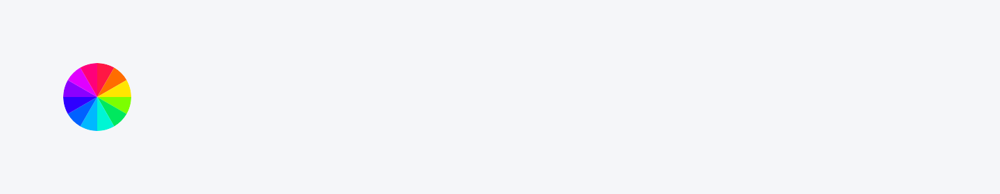
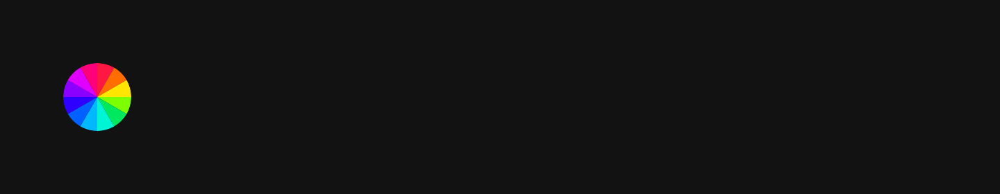

StudioPaletteButton
색상 팔레트를 여는 아이콘 조작기입니다.
- 컴포넌트 ID
studio-palette-button- 분류
- 선택
- 구현
StudioPaletteButton·MyWidget/app/src/main/java/com/mywidget/editor/core/designsystem/component/StudioColorSwatchBar.kt:144- 주요 API
- onClick, enabled, label, modifier, slotWidth, visualModifier, iconModifier
- 지원 상태
- 활성
- 비활성
- 변형
- 독립 아이콘
- 스와치 행 내부
- 크기
- 기본 48×48dp 슬롯
- 테마·토큰
- chipSurface
- onSurface
- 접근성·사용 규칙
- 팔레트 열기 동작을 현지화된 버튼 이름으로 읽습니다.
- 공통 사용 여부
- 스와치 행·색상 옵션에서 사용
- 설계 품질
- 시각 표면과 접근성 이름을 공유함
- 판단
- 유지
- 판단 근거
- 동일한 팔레트 이동에 동일한 진입 표기를 유지합니다.
- 구현·문서
- 현재 소스 위치와 심볼 확인
- 렌더링
- 네이티브 캡처 있음
코드 예시
StudioPaletteButton(
onClick = onOpenPalette,
modifier = paletteButtonModifier,
enabled = enabled,
slotWidth = swatchSlotWidth,
visualModifier = paletteVisualTestTag?.let { Modifier.testTag(it) } ?: Modifier,
iconModifier = paletteIconTestTag?.let { Modifier.testTag(it) } ?: Modifier,
)Android 네이티브 예시
아래 캡처에 표시된 상태와 기기 조건을 확인했습니다.

411 × 891 dp · 560 dpi · 글꼴 1배 · API 35 · ko-KR
캡처 기준 HEAD
ff118cc8d · 소스 지문 73da2a0be891 · 2026-11-13T10:23:11.274577Z
411 × 891 dp · 560 dpi · 글꼴 1배 · API 35 · ko-KR
캡처 기준 HEAD
ff118cc8d · 소스 지문 73da2a0be891 · 2026-11-13T10:23:11.274577Z사용 화면
- 배경·테두리 인스펙터
- 프레임 손그림
- 텍스트 인스펙터
- 색상·그라데이션 팔레트
- 모양 인스펙터
- 목록 항목과 템플릿
- 직접 아이콘 그리기
- 달력 연결 설정
- 손글씨 메모 연결
- 설치 위젯 기본 아이콘 편집
- 디자인 시스템 쇼케이스